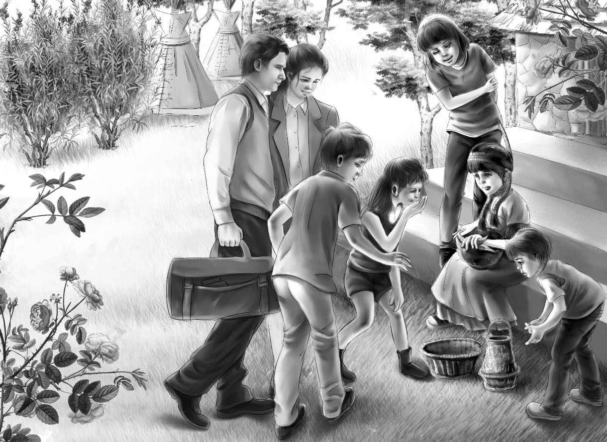

Old Village
大乔说得果然没错，第二天的天气很好，晴空万里，孩子们很难相信昨天晚上有过一场暴风雨。不过，他们已经很饿了。
“今天没有早饭吃，”大乔大声说，“大家能撑得住么？”
“当然能！”班尼说，“只是我希望能早点吃到午饭。”
“嗯，我觉得能行。”大乔说，“咱们到达老村子后肯定能找到吃的。”
“在那儿也能找到比尔。”班尼开心地说。
亨利和爱丽丝开始拆帐篷，维莉和班尼开始收拾行李卷。但是大乔什么也没做，只是坐在一棵原木上，好像在想什么心事。这一点很不像平时的大乔。
“别去打扰他。”爱丽丝轻声叮嘱四个孩子，“咱们继续打包，他一会儿就会来帮忙了。”
可是，大乔并没有过来帮忙。相反，他让大家停下来，和他一起待一会儿。
“我想让大家明白，我为什么带你们来旅行，”他说，“我们可能一无所获。班尼刚刚说‘在那儿能找到比尔’，可我觉得也许找不到，我甚至一直是这么想的。伐木营地的头儿从来没听说过这个人，龙先生和希尔先生也没听说过，他们俩可是常年在这附近走动的。”
大乔停下来，冲班尼笑了笑，继续说道：“而且，也许咱们也找不到那个铁盒子。”
“大乔，你为什么跟我们说这些？”维莉用她柔和的声音问道，“你是怕我们失望吗？”
“你说得没错！”大乔看了看小侄女，继续说道，“我希望你们不要因为解不开黄色小屋之谜而失望。咱们到达老村子后，我也不知道下一步该怎么办。咱们也许能找到铁盒子的线索，也许找不到。”
“我不会失望的，大乔。”班尼大声说，“露营已经很好玩了，就算找不到比尔也没关系。”
“是的，大乔，我们玩得都很开心。”杰西补充道。
大乔的神色又明朗了起来。“真的吗？”他问，“就算什么都找不到，也不会失望？那就好。我带大家远行的目的就是这个，一路上我们会非常开心的。”
“大乔，千万别再担心了，”亨利也说，“露营是我们最喜欢做的事儿。这让我们想起了在棚车里的日子，还有去年夏天在奇异岛上的情形。不过，如果我们继续找线索，你也不会介意吧？”
“当然不会！”大乔说，“其实我自己也想找。只要你们不失望，我就放心了。”
说完这些，大乔也开始忙活起来，专心打包。这时，大家又在他的脸上看到了笑容。
“咱们今天要快点划船，”他告诉大家，“从这儿还看不到老村子，湖前面拐个弯才看得到，我们要在中午前赶到那里，因为大家都饿坏了。”
独木舟又放上了行李，载着六个人在湖上荡漾了，这是漫长旅程的最后一段路。他们划着船前行了很久。
班尼突然问道：“大乔，如果我把‘灰鬼’苍蝇放到鱼线上，把它扔到独木舟后面，你猜会怎么样？”
“呃，”大乔笑着答道，“你可能会把钓鱼竿弄丢，当然也可能钓到一条大鱼。”他很乐意让班尼找点事儿做，这样小家伙就会忘掉饥饿了。
“我要试试！”班尼兴冲冲地说。这次，他很准地把苍蝇穿到了鱼线上，接着将鱼线甩到了小船后面。
“你要干什么？把鱼竿弄断么？”亨利在另一只独木舟上大声问道。
“不是！”班尼大声回答，“我在钓鱼！”
一路上，班尼都在盯着鱼线看。
突然，亨利大喊了起来：“你的鱼竿动了！”
眼看着鱼竿快滑入水里，班尼猛地跳起来，一把抓住鱼竿。
“太酷了！是一条大家伙！”大乔一边喊一边停止划船，过来帮忙。“班尼，慢点收线！不要让它跑了！别激动，慢慢来！”
维莉禁不住笑了——其实大乔比班尼还激动。
那条大鱼挣扎得很厉害，班尼小心翼翼地和它周旋，慢慢地把它拉向独木舟。
“需要我帮忙么，小伙子？”大乔问。
“快来！”班尼向大乔求助，他很怕好不容易钓到的大鱼跑掉。
大乔伸出胳膊，快速把大鱼拽进独木舟。
“是一条大鲑鱼！真是个美人儿！”他大声说，“我们一定能吃个饱。真可惜，你昨天没钓到它。”
“怎么总是这样？”班尼喊道，“昨天咱们几乎要饿死了，而现在马上要到商店了，却钓到了大鱼。”
“没关系。”大乔说，“我们还是会把它吃个精光的。”
他又拿起船桨，使劲朝前划着。经过最后一“望”时，已经接近中午了。他们看到一条小路，一直通向老村子旁的沙滩。
“这里就是黑熊小道的最后一站了，”爱丽丝笑着说，“我们既没找到比尔，也没找到线索。大乔，你现在还兴奋么？”
“兴奋？当然了！”大乔说，“而且我还很饿。你们看前面的沙滩，看到那个来接我们的人了吗？总会有人在那儿迎接独木舟。”
大乔和亨利禁不住划得更快了。不一会儿，独木舟就抵达了沙滩，有人帮他们把独木舟拉上了岸。
“你们好，外乡人，”那人说，“你们是从黑熊小道过来的吗？”
“是的，”大乔说，“现在我们想赶快找个地方吃饭，这几个孩子都饿坏了。老村子里有吃饭的地方吗？”
“当然有，先生！”那人说，“我就开了一家小餐厅，叫‘吉姆小店’。我是吉姆。你们想吃什么我都能做，腌肉、火腿、鹿肉、汉堡包……”
“哇，汉堡包！”班尼打断了吉姆，“我想吃汉堡包！”
“我也想吃！”杰西笑着说。
吉姆也笑了起来。“把你们的行李放这儿吧，”他说，“不会有人拿的。沿着这条路走就是我的小店。”
孩子们一抬头就看到了那家小店。门上挂了一块招牌，上面写了几个黑字：
大家径直朝小店走去。
“我看大多数露营的人都会来你这儿吃饭吧？”大乔问。
“没错。”吉姆答道，“他们有时还会在店里过夜，然后再走陆路回龙先生的商店。”
“我们可能也会这样。”大乔说。
吉姆小店是老村子里最大的房子。他们走了进去，环顾四周，店里很干净，支着三张桌子，空气中弥漫着洋葱的香味。
“饭很快就好。”吉姆招呼大家，“你们尽管坐，不用客气。每个人都会有汉堡包、洋葱和土豆。”
大家坐了下来，互相看着对方，他们已经等不及想吃饭了。不一会儿，吉姆端来一个白色的大盘子，上面盛满了食物。“放开肚皮吃吧，”他说，“厨房里还有很多。我刚做了两个苹果派，我再去看看能不能找点奶酪跟它配着吃。”
大家开始狼吞虎咽起来。这些食物在几个饥饿的孩子看来，简直是世间最好的美味。“您知道吗，我们连早饭都没吃呢！”班尼对吉姆说。
吉姆笑了。
“是真的，”大乔说，“我们昨天遇到了大雨，弄丢了大部分食物。”
“真不幸！”说完，吉姆赶紧回厨房去拿苹果派。很快，苹果派和又黄又香的奶酪就又被消灭光了。
“啊，现在感觉好多了！”维莉说，“我现在浑身都是劲儿！”
“真高兴听你这么说，”亨利看着妹妹，“你看上去的确好些了。”
爱丽丝对大乔说：“不管怎样，我们都得在老村子里过一夜。我觉得应该找间房子，让维莉在床上好好睡一觉。”
“这个好办！”吉姆笑着说，“你们看到街对面那座又小又旧的房子了吗？那不是我的房子，但一直是我在照看。它空了好多年，有露营的人想过夜，我就让他们住在那儿。我买了很多帆布床放在里面，露营的人一般都不介意三个人睡一间房。”
杰西开始清点人数。“我们也不介意！”她说。
“没错！”爱丽丝笑着对杰西说，“你、我和维莉可以住一间房，大乔、亨利和班尼住另一间。”
“正好有两间屋子，”吉姆说，“算上厨房就是三间了。”
亨利说：“太酷了！一切都很顺利，是不是，大乔？对了，吉姆，老村子里有没有什么好玩的？”
“有啊，”吉姆笑着说，“有人会去捕猎梅花鹿或麋鹿。树林里还住着一位老隐士，胡子又长又白，样子很奇怪，他离群索居，大家却喜欢去拜访他。路的尽头，住着一些印第安人，他们以编篮子为生，大家乐得观赏他们编草篮。”
“哦，那我们去看看印第安人吧。”杰西提议，“他们会介意吗？他们很老吗？”
“他们喜欢这样，不会介意的。有一个很老很老的印第安人，打从出生起就一直住在这里，他很健谈。”
“哈！”班尼看着亨利。
“我也是这么想的。”亨利小声对班尼说，“你是想说‘印第安老人也许能给我们提供线索’，对吧？”
“差不多！”班尼暗自得意道。
亨利付了饭钱，接着，他们沿着小店门前的路往村子里走去。
“大乔！”杰西兴奋地开口说道，“说不定那个印第安老人很久以前听说过比尔，我们可以问问他。”
很快，他们就看到了一个印第安女孩，她正坐在一栋老房子前的台阶上编着篮子。
“看，她编得多快啊！”爱丽丝说，“手指像在飞舞。”
“我要是能像她那样就好了！”维莉说。
“你能的，我可以教你。”印第安女孩突然开口道，原来刚才大家说的话她全听到了。“一点也不难。你看，我这才刚开头。瞧，用这些菖蒲穿进去，再穿出来，上面一根，下面一根。”
小女孩慢慢地编着，好让维莉看清每一个步骤。紧接着，她把篮子递给维莉，“现在你来试试。”
维莉接过篮子，不一会儿，她灵巧的双手就开始上下翻飞了，跟印第安小女孩的动作一模一样。
“太棒了，维莉！”爱丽丝赞道，“你的手真巧，什么都会做！”
“是啊，她能干极了！”亨利笑着说。他笃定地想，接下来该班尼出场了——班尼对姐姐从不吝惜赞美之辞。
然而，亨利看了看四周，并没有看到班尼。

“班尼在哪儿？”他大声问道。
“班尼！班尼！”大乔用最大的声音呼喊。
但是没有回应——班尼不见了！